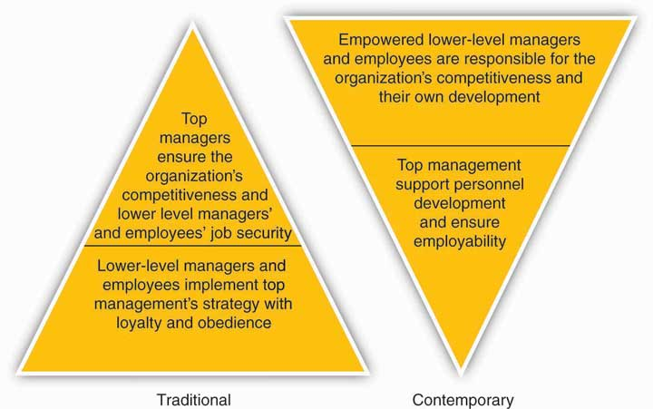
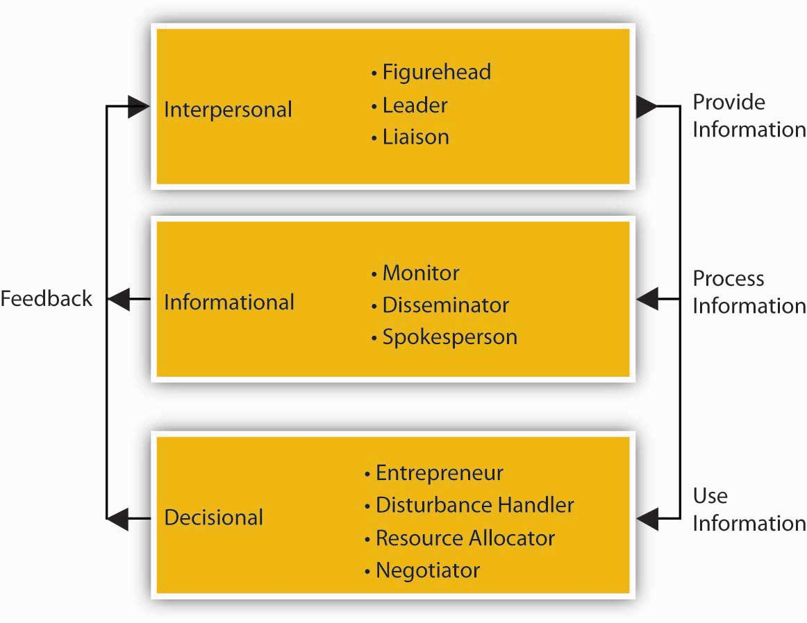

Reading this chapter will help you do the following:
We’re betting that you already have a lot of experience with organizations, teams, and leadership. You’ve been through schools, in clubs, participated in social or religious groups, competed in sports or games, or taken on full- or part-time jobs. Some of your experience was probably pretty positive, but you were also likely wondering sometimes, “Isn’t there a better way to do this?”
After participating in this course, we hope that you find the answer to be “Yes!” While management is both art and science, with our help you can identify and develop the skills essential to better managing your and others’ behaviors where organizations are concerned.
Before getting ahead of ourselves, just what is management, let alone principles of management? A manager’s primary challenge is to solve problems creatively, and you should view managementThe art of getting things done through the efforts of other people. as “the art of getting things done through the efforts of other people.”We draw this definition from a biography of Mary Parker Follett (1868–1933) written by P. Graham, Mary Parker Follett: Prophet of Management (Boston: Harvard Business School Press, 1995). Follett was an American social worker, consultant, and author of books on democracy, human relations, and management. She worked as a management and political theorist, introducing such phrases as “conflict resolution,” “authority and power,” and “the task of leadership.” The principles of managementThe means by which you actually manage, that is, get things done through others., then, are the means by which you actually manage, that is, get things done through others—individually, in groups, or in organizations. Formally defined, the principles of management are the activities that “plan, organize, and control the operations of the basic elements of [people], materials, machines, methods, money and markets, providing direction and coordination, and giving leadership to human efforts, so as to achieve the sought objectives of the enterprise.”The fundamental notion of principles of management was developed by French management theorist Henri Fayol (1841–1925). He is credited with the original planning-organizing-leading-controlling framework (P-O-L-C), which, while undergoing very important changes in content, remains the dominant management framework in the world. See H. Fayol, General and Industrial Management (Paris: Institute of Electrical and Electronics Engineering, 1916). For this reason, principles of management are often discussed or learned using a framework called P-O-L-C, which stands for planning, organizing, leading, and controlling.
Managers are required in all the activities of organizations: budgeting, designing, selling, creating, financing, accounting, and artistic presentation; the larger the organization, the more managers are needed. Everyone employed in an organization is affected by management principles, processes, policies, and practices as they are either a manager or a subordinate to a manager, and usually they are both.
Managers do not spend all their time managing. When choreographers are dancing a part, they are not managing, nor are office managers managing when they personally check out a customer’s credit. Some employees perform only part of the functions described as managerial—and to that extent, they are mostly managers in limited areas. For example, those who are assigned the preparation of plans in an advisory capacity to a manager, to that extent, are making management decisions by deciding which of several alternatives to present to the management. However, they have no participation in the functions of organizing, staffing, and supervising and no control over the implementation of the plan selected from those recommended. Even independent consultants are managers, since they get most things done through others—those others just happen to be their clients! Of course, if advisers or consultants have their own staff of subordinates, they become a manager in the fullest sense of the definition. They must develop business plans; hire, train, organize, and motivate their staff members; establish internal policies that will facilitate the work and direct it; and represent the group and its work to those outside of the firm.
Goodwill Industries International (a nonprofit organization) has been an advocate of diversity for over 100 years. In 1902, in Boston, Massachusetts, a young missionary set up a small operation enlisting struggling immigrants in his parish to clean and repair clothing and goods to later sell. This provided workers with the opportunity for basic education and language training. His philosophy was to provide a “hand up,” not a “hand out.” Although today you can find retail stores in over 2,300 locations worldwide, and in 2009 more than 64 million people in the United States and Canada donated to Goodwill, the organization has maintained its core mission to respect the dignity of individuals by eliminating barriers to opportunity through the power of work. Goodwill accomplishes this goal, in part, by putting 84% of its revenue back into programs to provide employment, which in 2008 amounted to $3.23 billion. As a result of these programs, every 42 seconds of every business day, someone gets a job and is one step closer to achieving economic stability.
Goodwill is a pioneer of social enterprise and has managed to build a culture of respect through its diversity programs. If you walk into a local Goodwill retail store you are likely to see employees from all walks of life, including differences in gender and race, physical ability, sexual orientation, and age. Goodwill provides employment opportunities for individuals with disabilities, lack of education, or lack of job experience. The company has created programs for individuals with criminal backgrounds who might otherwise be unable to find employment, including basic work skill development, job placement assistance, and life skills. In 2008, more than 172,000 people obtained employment, earning $2.3 billion in wages and gaining tools to be productive members of their community. Goodwill has established diversity as an organizational norm, and as a result, employees are comfortable addressing issues of stereotyping and discrimination. In an organization of individuals with such wide-ranging backgrounds, it is not surprising that there are a wide range of values and beliefs.
Management and operations are decentralized within the organization with 166 independent community-based Goodwill stores. These regional businesses are independent, not-for-profit human services organizations. Despite its decentralization, the company has managed to maintain its core values. Seattle’s Goodwill is focused on helping the city’s large immigrant population and those individuals without basic education and English language skills. And at Goodwill Industries of Kentucky, the organization recently invested in custom software to balance daily sales at stores to streamline operations so managers can spend less time on paperwork and more time managing employees.
Part of Goodwill’s success over the years can be attributed to its ability to innovate. As technology evolves and such skills became necessary for most jobs, Goodwill has developed training programs to ensure that individuals are fully equipped to be productive members of the workforce, and in 2008 Goodwill was able to provide 1.5 million people with career services. As an organization, Goodwill itself has entered into the digital age. You can now find Goodwill on Facebook, Twitter, and YouTube. Goodwill’s business practices encompass the values of the triple bottom line of people, planet, and profit. The organization is taking advantage of new green initiatives and pursuing opportunities for sustainability. For example, at the beginning of 2010, Goodwill received a $7.3 million grant from the U.S. Department of Labor, which will provide funds to prepare individuals to enter the rapidly growing green industry of their choice. Oregon’s Goodwill Industries has partnered with the Oregon Department of Environmental Quality and its Oregon E-Cycles program to prevent the improper disposal of electronics. Goodwill discovered long ago that diversity is an advantage rather than a hindrance.
Case written by [citation redacted per publisher request]. Based on information from Goodwill Industries of North Central Wisconsin. (2009). A brief history of Goodwill Industries International. Retrieved March 3, 2010, from http://www.goodwillncw.org/goodwillhistory1.htm; Walker, R. (2008, November 2). Consumed: Goodwill hunting. New York Times Magazine, p. 18; Tabafunda, J. (2008, July 26). After 85 years, Seattle Goodwill continues to improve lives. Northwest Asian Weekly. Retrieved March 1, 2010, from http://www.nwasianweekly.com/old/2008270031/goodwill20082731.htm; Slack, E. (2009). Selling hope. Retail Merchandiser, 49(1), 89–91; Castillo, L. (2009, February 24). Goodwill Industries offers employment programs. Clovis News Journal. Retrieved April 22, 2010, from http://www.cnjonline.com/news/industries-32474-goodwill-duttweiler.html; Information retrieved April 22, 2010, from the Oregon E-Cycles Web site: http://www.deq.state.or.us/lq/ecycle.
We tend to think about managers based on their position in an organization. This tells us a bit about their role and the nature of their responsibilities. The following figure summarizes the historic and contemporary views of organizations with respect to managerial roles.S. Ghoshal and C. Bartlett, The Individualized Corporation: A Fundamentally New Approach to Management (New York: Collins Business, 1999). In contrast to the traditional, hierarchical relationship among layers of management and managers and employees, in the contemporary view, top managers support and serve other managers and employees (through a process called empowerment), just as the organization ultimately exists to serve its customers and clients. Empowerment The process of enabling or authorizing an individual to think, behave, take action, and control work and decision making in autonomous ways. is the process of enabling or authorizing an individual to think, behave, take action, and control work and decision making in autonomous ways.
In both the traditional and contemporary views of management, however, there remains the need for different types of managers. Top managers are responsible for developing the organization’s strategy and being a steward for its vision and mission. A second set of managers includes functional, team, and general managers. Functional managers are responsible for the efficiency and effectiveness of an area, such as accounting or marketing. Supervisory or team managers are responsible for coordinating a subgroup of a particular function or a team composed of members from different parts of the organization. Sometimes you will hear distinctions made between line and staff managers.
A line manager leads a function that contributes directly to the products or services the organization creates. For example, a line manager (often called a product, or service manager) at Procter & Gamble (P&G) is responsible for the production, marketing, and profitability of the Tide detergent product line. A staff manager, in contrast, leads a function that creates indirect inputs. For example, finance and accounting are critical organizational functions but do not typically provide an input into the final product or service a customer buys, such as a box of Tide detergent. Instead, they serve a supporting role. A project manager has the responsibility for the planning, execution, and closing of any project. Project managers are often found in construction, architecture, consulting, computer networking, telecommunications, or software development.
A general manager is someone who is responsible for managing a clearly identifiable revenue-producing unit, such as a store, business unit, or product line. General managers typically must make decisions across different functions and have rewards tied to the performance of the entire unit (i.e., store, business unit, product line, etc.). General managers take direction from their top executives. They must first understand the executives’ overall plan for the company. Then they set specific goals for their own departments to fit in with the plan. The general manager of production, for example, might have to increase certain product lines and phase out others. General managers must describe their goals clearly to their support staff. The supervisory managers see that the goals are met.
Figure 1.4 The Changing Roles of Management and Managers
Managers are responsible for the processes of getting activities completed efficiently with and through other people and setting and achieving the firm’s goals through the execution of four basic management functions: planning, organizing, leading, and controlling. Both sets of processes utilize human, financial, and material resources.
Of course, some managers are better than others at accomplishing this! There have been a number of studies on what managers actually do, the most famous of those conducted by Professor Henry Mintzberg in the early 1970s.H. Mintzberg, The Nature of Managerial Work (New York: Harper & Row, 1973). One explanation for Mintzberg’s enduring influence is perhaps that the nature of managerial work has changed very little since that time, aside from the shift to an empowered relationship between top managers and other managers and employees, and obvious changes in technology, and the exponential increase in information overload.
After following managers around for several weeks, Mintzberg concluded that, to meet the many demands of performing their functions, managers assume multiple roles. A role is an organized set of behaviors, and Mintzberg identified 10 roles common to the work of all managers. As summarized in the following figure, the 10 roles are divided into three groups: interpersonal, informational, and decisional. The informational roles link all managerial work together. The interpersonal roles ensure that information is provided. The decisional roles make significant use of the information. The performance of managerial roles and the requirements of these roles can be played at different times by the same manager and to different degrees, depending on the level and function of management. The 10 roles are described individually, but they form an integrated whole.
The three interpersonal roles are primarily concerned with interpersonal relationships. In the figurehead role, the manager represents the organization in all matters of formality. The top-level manager represents the company legally and socially to those outside of the organization. The supervisor represents the work group to higher management and higher management to the work group. In the liaison role, the manager interacts with peers and people outside the organization. The top-level manager uses the liaison role to gain favors and information, while the supervisor uses it to maintain the routine flow of work. The leader role defines the relationships between the manager and employees.
Figure 1.5 Ten Managerial Roles
The direct relationships with people in the interpersonal roles place the manager in a unique position to get information. Thus, the three informational roles are primarily concerned with the information aspects of managerial work. In the monitor role, the manager receives and collects information. In the role of disseminator, the manager transmits special information into the organization. The top-level manager receives and transmits more information from people outside the organization than the supervisor. In the role of spokesperson, the manager disseminates the organization’s information into its environment. Thus, the top-level manager is seen as an industry expert, while the supervisor is seen as a unit or departmental expert.
The unique access to information places the manager at the center of organizational decision making. There are four decisional roles managers play. In the entrepreneur role, the manager initiates change. In the disturbance handler role, the manager deals with threats to the organization. In the resource allocator role, the manager chooses where the organization will expend its efforts. In the negotiator role, the manager negotiates on behalf of the organization. The top-level manager makes the decisions about the organization as a whole, while the supervisor makes decisions about his or her particular work unit.
The supervisor performs these managerial roles but with different emphasis than higher managers. Supervisory management is more focused and short-term in outlook. Thus, the figurehead role becomes less significant and the disturbance handler and negotiator roles increase in importance for the supervisor. Since leadership permeates all activities, the leader role is among the most important of all roles at all levels of management.
So what do Mintzberg’s conclusions about the nature of managerial work mean for you? On the one hand, managerial work is the lifeblood of most organizations because it serves to choreograph and motivate individuals to do amazing things. Managerial work is exciting, and it is hard to imagine that there will ever be a shortage of demand for capable, energetic managers. On the other hand, managerial work is necessarily fast-paced and fragmented, where managers at all levels express the opinion that they must process much more information and make more decisions than they could have ever possibly imagined. So, just as the most successful organizations seem to have well-formed and well-executed strategies, there is also a strong need for managers to have good strategies about the way they will approach their work. This is exactly what you will learn through principles of management.
Managers are responsible for getting work done through others. We typically describe the key managerial functions as planning, organizing, leading, and controlling. The definitions for each of these have evolved over time, just as the nature of managing in general has evolved over time. This evolution is best seen in the gradual transition from the traditional hierarchical relationship between managers and employees, to a climate characterized better as an upside-down pyramid, where top executives support middle managers and they, in turn, support the employees who innovate and fulfill the needs of customers and clients. Through all four managerial functions, the work of managers ranges across 10 roles, from figurehead to negotiator. While actual managerial work can seem challenging, the skills you gain through principles of management—consisting of the functions of planning, organizing, leading, and controlling—will help you to meet these challenges.
The principles of management are drawn from a number of academic fields, principally, the fields of leadership, entrepreneurship, and strategy.
If management is defined as getting things done through others, then leadershipThe act of influencing others toward a goal. should be defined as the social and informal sources of influence that you use to inspire action taken by others. It means mobilizing others to want to struggle toward a common goal. Great leaders help build an organization’s human capital, then motivate individuals to take concerted action. Leadership also includes an understanding of when, where, and how to use more formal sources of authority and power, such as position or ownership. Increasingly, we live in a world where good management requires good leaders and leadership. While these views about the importance of leadership are not new (see “Views on Managers Versus Leaders”), competition among employers and countries for the best and brightest, increased labor mobility (think “war for talent” here), and hypercompetition puts pressure on firms to invest in present and future leadership capabilities.
P&G provides a very current example of this shift in emphasis to leadership as a key principle of management. For example, P&G recruits and promotes those individuals who demonstrate success through influence rather than direct or coercive authority. Internally, there has been a change from managers being outspoken and needing to direct their staff, to being individuals who electrify and inspire those around them. Good leaders and leadership at P&G used to imply having followers, whereas in today’s society, good leadership means followership and bringing out the best in your peers. This is one of the key reasons that P&G has been consistently ranked among the top 10 most admired companies in the United States for the last three years, according to Fortune magazine.Ranking of Most Admired Firms for 2006, 2007, 2008. http://www.fortune.com (accessed October 15, 2008).
Whereas P&G has been around for some 170 years, another winning firm in terms of leadership is Google, which has only been around for little more than a decade. Both firms emphasize leadership in terms of being exceptional at developing people. Google has topped Fortune’s 100 Best Companies to Work for the past two years. Google’s founders, Sergey Brin and Larry Page, built a company around the idea that work should be challenging and the challenge should be fun.http://www.google.com/intl/en/corporate/tenthings.html (accessed October 15, 2008). Google’s culture is probably unlike any in corporate America, and it’s not because of the ubiquitous lava lamps throughout the company’s headquarters or that the company’s chef used to cook for the Grateful Dead. In the same way Google puts users first when it comes to online service, Google espouses that it puts employees first when it comes to daily life in all of its offices. There is an emphasis on team achievements and pride in individual accomplishments that contribute to the company’s overall success. Ideas are traded, tested, and put into practice with a swiftness that can be dizzying. Observers and employees note that meetings that would take hours elsewhere are frequently little more than a conversation in line for lunch and few walls separate those who write the code from those who write the checks. This highly communicative environment fosters a productivity and camaraderie fueled by the realization that millions of people rely on Google results. Leadership at Google amounts to a deep belief that if you give the proper tools to a group of people who like to make a difference, they will.
My definition of a leader…is a man who can persuade people to do what they don’t want to do, or do what they’re too lazy to do, and like it.
Harry S. Truman (1884–1972), 33rd president of the United States
You cannot manage men into battle. You manage things; you lead people.
Grace Hopper (1906–1992), Admiral, U.S. Navy
Managers have subordinates—leaders have followers.
Chester Bernard (1886–1961), former executive and author of Functions of the Executive
The first job of a leader is to define a vision for the organization…Leadership is the capacity to translate vision into reality.
Warren Bennis (1925–), author and leadership scholar
A manager takes people where they want to go. A great leader takes people where they don’t necessarily want to go but ought to.
Rosalynn Carter (1927–), First Lady of the United States, 1977–1981
It’s fitting that this section on entrepreneurship follows the discussion of Google. EntrepreneurshipThe recognition of opportunities (needs, wants, problems, and challenges) and the use or creation of resources to implement innovative ideas for new, thoughtfully planned ventures. is defined as the recognition of opportunities (needs, wants, problems, and challenges) and the use or creation of resources to implement innovative ideas for new, thoughtfully planned ventures. Perhaps this is obvious, but an entrepreneurA person who engages in the process of entrepreneurship. is a person who engages in the process of entrepreneurship. We describe entrepreneurship as a process because it often involves more than simply coming up with a good idea—someone also has to convert that idea into action. As an example of both, Google’s leaders suggest that its point of distinction “is anticipating needs not yet articulated by our global audience, then meeting them with products and services that set new standards. This constant dissatisfaction with the way things are is ultimately the driving force behind the world’s best search engine.” http://www.google.com/intl/en/corporate/tenthings.html (accessed October 15, 2008).
Entrepreneurs and entrepreneurship are the catalysts for value creation. They identify and create new markets, as well as foster change in existing ones. However, such value creation first requires an opportunity. Indeed, the opportunity-driven nature of entrepreneurship is critical. Opportunities are typically characterized as problems in search of solutions, and the best opportunities are big problems in search of big solutions. “The greater the inconsistencies in existing service and quality, in lead times and in lag times, the greater the vacuums and gaps in information and knowledge, the greater the opportunities.” J. Timmons, The Entrepreneurial Process (New York: McGraw-Hill, 1999), 39. In other words, bigger problems will often mean there will be a bigger market for the product or service that the entrepreneur creates. We hope you can see why the problem-solving, opportunity-seeking nature of entrepreneurship is a fundamental building block for effective principles of management.
When an organization has a long-term purpose, articulated in clear goals and objectives, and these goals and objectives can be rolled up into a coherent plan of action, then we would say that the organization has a strategy. It has a good or even great strategy when this plan also takes advantage of unique resources and capabilities to exploit a big and growing external opportunity. StrategyThe central, integrated, externally-oriented concept of how an organization will achieve its objectives. then, is the central, integrated, externally-oriented concept of how an organization will achieve its objectives.D. Hambrick and J. Fredrickson, “Are You Sure You Have a Strategy?” Academy of Management Executive 15, no. 4 (2001): 2. Strategic managementWhat an organization does to achieve its mission and vision. is the body of knowledge that answers questions about the development and implementation of good strategies.
Strategic management is important to all organizations because, when correctly formulated and communicated, strategy provides leaders and employees with a clear set of guidelines for their daily actions. This is why strategy is so critical to the principles of management you are learning about. Simply put, strategy is about making choices: What do I do today? What shouldn’t I be doing? What should my organization be doing? What should it stop doing?
You know that leadership, entrepreneurship, and strategy are the inspiration for important, valuable, and useful principles of management. Now you will want to understand how they might relate to one another. In terms of principles of management, you can think of leadership, entrepreneurship, and strategic management as answering questions about “who,” “what,” and “how.” Leadership helps you understand who helps lead the organization forward and what the critical characteristics of good leadership might be. Entrepreneurial firms and entrepreneurs in general are fanatical about identifying opportunities and solving problems—for any organization, entrepreneurship answers big questions about “what” an organization’s purpose might be. Finally, strategic management aims to make sure that the right choices are made—specifically, that a good strategy is in place—to exploit those big opportunities.
One way to see how leadership, entrepreneurship, and strategy come together for an organization—and for you—is through a recent (disguised) job posting from Craigslist. Look at the ideal candidate characteristics identified in the Help Wanted ad—you don’t have to look very closely to see that if you happen to be a recent business undergrad, then the organization depicted in the ad is looking for you. The posting identifies a number of areas of functional expertise for the target candidate. You can imagine that this new position is pretty critical for the success of the business. For that reason, we hope you are not surprised to see that, beyond functional expertise, this business seeks someone with leadership, entrepreneurial, and strategic orientation and skills. Now you have a better idea of what those key principles of management involve.
We’re hiring a chief of staff to bring some order to the mayhem of our firm’s growth. You will touch everything at the company, from finance to sales, marketing to operations, recruiting to human resources, accounting to investor relations. You will report directly to the CEO.
Here’s what you’re going to be asked to do across a range of functional areas in the first 90 days, before your job evolves into a whole new set of responsibilities:
Marketing
Sales
Finance and Accounting
Operations
HR and Recruiting
Production and Product Development
The Ideal Candidate Is…
The principles of management are drawn from three specific areas—leadership, entrepreneurship, and strategic management. You learned that leadership helps you understand who helps lead the organization forward and what the critical characteristics of good leadership might be. Entrepreneurs are fanatical about identifying opportunities and solving problems—for any organization, entrepreneurship answers big questions about “what” an organization’s purpose might be. Finally, as you’ve already learned, strategic management aims to make sure that the right choices are made—specifically, that a good strategy is in place—to exploit those big opportunities.
A manager’s primary challenge is to solve problems creatively. While drawing from a variety of academic disciplines, and to help managers respond to the challenge of creative problem solving, principles of management have long been categorized into the four major functions of planning, organizing, leading, and controlling (the P-O-L-C framework). The four functions, summarized in the P-O-L-C figure, are actually highly integrated when carried out in the day-to-day realities of running an organization. Therefore, you should not get caught up in trying to analyze and understand a complete, clear rationale for categorizing skills and practices that compose the whole of the P-O-L-C framework.
It is important to note that this framework is not without criticism. Specifically, these criticisms stem from the observation that the P-O-L-C functions might be ideal but that they do not accurately depict the day-to-day actions of actual managers.H. Mintzberg, The Nature of Managerial Work (New York: Harper & Row, 1973); D. Lamond, “A Matter of Style: Reconciling Henri and Henry,” Management Decision 42, no. 2 (2004): 330–56. The typical day in the life of a manager at any level can be fragmented and hectic, with the constant threat of having priorities dictated by the law of the trivial many and important few (i.e., the 80/20 rule). However, the general conclusion seems to be that the P-O-L-C functions of management still provide a very useful way of classifying the activities managers engage in as they attempt to achieve organizational goals.D. Lamond, “A Matter of Style: Reconciling Henri and Henry,” Management Decision 42, no. 2 (2004): 330–56.
Figure 1.7 The P-O-L-C Framework

Planning is the function of management that involves setting objectives and determining a course of action for achieving those objectives. Planning requires that managers be aware of environmental conditions facing their organization and forecast future conditions. It also requires that managers be good decision makers.
Planning is a process consisting of several steps. The process begins with environmental scanningThe act of analyzing the critical external contingencies facing an organization in terms of economic conditions, competitors, and customers. which simply means that planners must be aware of the critical contingencies facing their organization in terms of economic conditions, their competitors, and their customers. Planners must then attempt to forecast future conditions. These forecasts form the basis for planning.
Planners must establish objectives, which are statements of what needs to be achieved and when. Planners must then identify alternative courses of action for achieving objectives. After evaluating the various alternatives, planners must make decisions about the best courses of action for achieving objectives. They must then formulate necessary steps and ensure effective implementation of plans. Finally, planners must constantly evaluate the success of their plans and take corrective action when necessary.
There are many different types of plans and planning.
Strategic planningThe process of analyzing competitive opportunities and threats, as well as the strengths and weaknesses of the organization, and then determining how to position the organization to compete effectively in its environment. involves analyzing competitive opportunities and threats, as well as the strengths and weaknesses of the organization, and then determining how to position the organization to compete effectively in their environment. Strategic planning has a long time frame, often three years or more. Strategic planning generally includes the entire organization and includes formulation of objectives. Strategic planning is often based on the organization’s mission, which is its fundamental reason for existence. An organization’s top management most often conducts strategic planning.
Tactical planningIntermediate-range planning that is designed to develop relatively concrete and specific means to implement the strategic plan. is intermediate-range (one to three years) planning that is designed to develop relatively concrete and specific means to implement the strategic plan. Middle-level managers often engage in tactical planning.
Operational planning Assumes the existence of goals and objectives and specifies ways to achieve them. generally assumes the existence of organization-wide or subunit goals and objectives and specifies ways to achieve them. Operational planning is short-range (less than a year) planning that is designed to develop specific action steps that support the strategic and tactical plans.
Organizing is the function of management that involves developing an organizational structure and allocating human resources to ensure the accomplishment of objectives. The structure of the organization is the framework within which effort is coordinated. The structure is usually represented by an organization chart, which provides a graphic representation of the chain of command within an organization. Decisions made about the structure of an organization are generally referred to as organizational designThe matching of organizational form, such as structure, reporting relationships, and information technology, with the organization’s strategy. decisions.
Organizing also involves the design of individual jobs within the organization. Decisions must be made about the duties and responsibilities of individual jobs, as well as the manner in which the duties should be carried out. Decisions made about the nature of jobs within the organization are generally called “job design” decisions.
Organizing at the level of the organization involves deciding how best to departmentalize, or cluster, jobs into departments to coordinate effort effectively. There are many different ways to departmentalize, including organizing by function, product, geography, or customer. Many larger organizations use multiple methods of departmentalization.
Organizing at the level of a particular job involves how best to design individual jobs to most effectively use human resources. Traditionally, job designThe process of putting together various elements to form a job, bearing in mind organizational and individual worker requirements. was based on principles of division of labor and specialization, which assumed that the more narrow the job content, the more proficient the individual performing the job could become. However, experience has shown that it is possible for jobs to become too narrow and specialized. For example, how would you like to screw lids on jars one day after another, as you might have done many decades ago if you worked in company that made and sold jellies and jams? When this happens, negative outcomes result, including decreased job satisfaction and organizational commitment, increased absenteeism, and turnover.
Recently, many organizations have attempted to strike a balance between the need for worker specialization and the need for workers to have jobs that entail variety and autonomy. Many jobs are now designed based on such principles as empowerment, job enrichmentA job redesign technique that allows workers more control over how they perform their own tasks. and teamworkCooperative effort by the members of a group or team to achieve a common goal.. For example, HUI Manufacturing, a custom sheet metal fabricator, has done away with traditional “departments” to focus on listening and responding to customer needs. From company-wide meetings to team huddles, HUI employees know and understand their customers and how HUI might service them best.http://www.huimfg.com/abouthui-yourteams.aspx (accessed October 15, 2008).
Leading involves the social and informal sources of influence that you use to inspire action taken by others. If managers are effective leaders, their subordinates will be enthusiastic about exerting effort to attain organizational objectives.
The behavioral sciences have made many contributions to understanding this function of management. Personality research and studies of job attitudes provide important information as to how managers can most effectively lead subordinates. For example, this research tells us that to become effective at leading, managers must first understand their subordinates’ personalities, values, attitudes, and emotions.
Studies of motivation and motivation theory provide important information about the ways in which workers can be energized to put forth productive effort. Studies of communication provide direction as to how managers can effectively and persuasively communicate. Studies of leadership and leadership style provide information regarding questions, such as, “What makes a manager a good leader?” and “In what situations are certain leadership styles most appropriate and effective?”
Controlling involves ensuring that performance does not deviate from standards. Controlling consists of three steps, which include (1) establishing performance standards, (2) comparing actual performance against standards, and (3) taking corrective action when necessary. Performance standards are often stated in monetary terms such as revenue, costs, or profits but may also be stated in other terms, such as units produced, number of defective products, or levels of quality or customer service.
The measurement of performance can be done in several ways, depending on the performance standards, including financial statements, sales reports, production results, customer satisfaction, and formal performance appraisals. Managers at all levels engage in the managerial function of controlling to some degree.
The managerial function of controlling should not be confused with control in the behavioral or manipulative sense. This function does not imply that managers should attempt to control or to manipulate the personalities, values, attitudes, or emotions of their subordinates. Instead, this function of management concerns the manager’s role in taking necessary actions to ensure that the work-related activities of subordinates are consistent with and contributing toward the accomplishment of organizational and departmental objectives.
Effective controlling requires the existence of plans, since planning provides the necessary performance standards or objectives. Controlling also requires a clear understanding of where responsibility for deviations from standards lies. Two traditional control techniques are budget and performance audits. An audit involves an examination and verification of records and supporting documents. A budget audit provides information about where the organization is with respect to what was planned or budgeted for, whereas a performance audit might try to determine whether the figures reported are a reflection of actual performance. Although controlling is often thought of in terms of financial criteria, managers must also control production and operations processes, procedures for delivery of services, compliance with company policies, and many other activities within the organization.
The management functions of planning, organizing, leading, and controlling are widely considered to be the best means of describing the manager’s job, as well as the best way to classify accumulated knowledge about the study of management. Although there have been tremendous changes in the environment faced by managers and the tools used by managers to perform their roles, managers still perform these essential functions.
The principles of management can be distilled down to four critical functions. These functions are planning, organizing, leading, and controlling. This P-O-L-C framework provides useful guidance into what the ideal job of a manager should look like.
Webster’s dictionary defines performance as “the execution of an action” and “something accomplished.”http://www.merriam-webster.com/dictionary/performance (accessed October 15, 2008). Principles of management help you better understand the inputs into critical organizational outcomes like a firm’s economic performance. Economic performance is very important to a firm’s stakeholdersIndividuals and organizations who are actively involved in the organization or whose interests may be positively or negatively affected as a result of what the organization does. particularly its investors or owners, because this performance eventually provides them with a return on their investment. Other stakeholders, like the firm’s employees and the society at large, are also deemed to benefit from such performance, albeit less directly. Increasingly though, it seems clear that noneconomic accomplishments, such as reducing waste and pollution, for example, are key indicators of performance as well. Indeed, this is why the notion of the triple bottom lineThe measurement of business performance along social, environmental, and economic dimensions. is gaining so much attention in the business press. Essentially, the triple bottom line refers to The measurement of business performance along social, environmental, and economic dimensions. We introduce you to economic, social, and environmental performance and conclude the section with a brief discussion of the interdependence of economic performance with other forms of performance.
In a traditional sense, the economic performance of a firm is a function of its success in producing benefits for its owners in particular, through product innovation and the efficient use of resources. When you talk about this type of economic performance in a business context, people typically understand you to be speaking about some form of profit.
The definition of economic profit is the difference between revenue and the opportunity cost of all resources used to produce the items sold.W. P. Albrecht, Economics (Englewood Cliffs, NJ: Prentice Hall, 1983). This definition includes implicit returns as costs. For our purposes, it may be simplest to think of economic profit as a form of accounting profitThe difference between an organization’s revenues and its costs in a given period of time. where profits are achieved when revenues exceed the accounting cost the firm “pays” for those inputs. In other words, your organization makes a profit when its revenues are more than its costs in a given period of time, such as three months, six months, or a year.
Before moving on to social and environmental performance, it is important to note that customers play a big role in economic profits. Profits accrue to firms because customers are willing to pay a certain price for a product or service, as opposed to a competitor’s product or service of a higher or lower price. If customers are only willing to make purchases based on price, then a firm, at least in the face of competition, will only be able to generate profit if it keeps its costs under control.
You have learned a bit about economic performance and its determinants. For most organizations, you saw that economic performance is associated with profits, and profits depend a great deal on how much customers are willing to pay for a good or service.
With regard to social and environmental performance, it is similarly useful to think of them as forms of profit—social and environmental profit to be exact. Increasingly, the topics of social and environmental performance have garnered their own courses in school curricula; in the business world, they are collectively referred to as corporate social responsibility (CSR)When organizations consider the interests of society by taking responsibility for the effect of their activities on customers, suppliers, employees, shareholders, communities, and the environment in all aspects of their operations.
CSR is a concept whereby organizations consider the interests of society by taking responsibility for the impact of their activities on customers, suppliers, employees, shareholders, communities, and the environment in all aspects of their operations. This obligation is seen to extend beyond the statutory obligation to comply with legislation and sees organizations voluntarily taking further steps to improve the quality of life for employees and their families, as well as for the local community and society at large.
Two companies that have long blazed a trail in CSR are Ben & Jerry’s and S. C. Johnson. Their statements about why they do this, summarized in Table 1.1 "Examples of leading firms with strong CSR orientations", capture many of the facets just described.
Table 1.1 Examples of leading firms with strong CSR orientations
| Why We Do It? | |
|---|---|
| Ben & Jerry’s | “We’ve taken time each year since 1989 to compile this [Social Audit] report because we continue to believe that it keeps us in touch with our Company’s stated Social Mission. By raising the profile of social and environmental matters inside the Company and recording the impact of our work on the community, this report aids us in our search for business decisions that support all three parts of our Company Mission Statement: Economic, Product, and Social. In addition, the report is an important source of information about the Company for students, journalists, prospective employees, and other interested observers. In this way, it helps us in our quest to keep our values, our actions, and public perceptions in alignment.”http://www.benjerrys.com/our_company/about_us/social_mission/social_audits (accessed October 15, 2008). |
| S. C. Johnson | “It’s nice to live next door to a family that cares about its neighbors, and at S. C. Johnson we are committed to being a good neighbor and contributing to the well-being of the countries and the communities where we conduct business. We have a wide variety of efforts to drive global development and growth that benefit the people around us and the planet we all share. From exceptional philanthropy and volunteerism to new business models that bring economic growth to the world’s poorest communities, we’re helping to create stronger communities for families around the globe.”http://www.scjohnson.com/community (accessed October 15, 2008). |
Figure 1.9
Environmentally Neutral Design (END) designs shoes with the goal of eliminating the surplus material needed to make a shoe such that it costs less to make and is lighter than other performance shoes on the market.
Photo used with permission of Environmentally Neutral Design (END).
Is there really a way to achieve a triple bottom line in a way that actually builds up all three facets of performance—economic, social, and environmental? Advocates of CSR understandably argue that this is possible and should be the way all firms are evaluated. Increasingly, evidence is mounting that attention to a triple bottom line is more than being “responsible” but instead just good business. Critics argue that CSR detracts from the fundamental economic role of businesses; others argue that it is nothing more than superficial window dressing; still, others argue that it is an attempt to preempt the role of governments as a watchdog over powerful multinational corporations.
While there is no systematic evidence supporting such a claim, a recent review of nearly 170 research studies on the relationship between CSR and firm performance reported that there appeared to be no negative shareholder effects of such practices. In fact, this report showed that there was a small positive relationship between CSR and shareholder returns.J. Margolis and Hillary H. Elfenbein, “Doing well by Doing Good? Don’t Count on It,” Harvard Business Review 86 (2008): 1–2. Similarly, companies that pay good wages and offer good benefits to attract and retain high-caliber employees “are not just being socially responsible; they are merely practicing good management.”R. Reich, Supercapitalism: The Transformation of Business, Democracy, and Everyday Life (New York: Knopf, 2007).
The financial benefits of social or environmental CSR initiatives vary by context. For example, environment-friendly strategies are much more complicated in the consumer products and services market. For example, cosmetics retailer The Body Shop and StarKist Seafood Company, a strategic business unit of Heinz Food, both undertook environmental strategies but only the former succeeded. The Body Shop goes to great lengths to ensure that its business is ecologically sustainable.http://www.bodyshop.com (accessed October 15, 2008). It actively campaigns against human rights abuses and for animal and environmental protection and is one of the most respected firms in the world, despite its small size. Consumers pay premium prices for Body Shop products, ostensibly because they believe that it simply costs more to provide goods and services that are environmentally friendly. The Body Shop has been wildly successful.
StarKist, too, adopted a CSR approach, when, in 1990, it decided to purchase and sell exclusively dolphin-safe tuna. At the time, biologists thought that the dolphin population decline was a result of the thousands killed in the course of tuna harvests. However, consumers were unwilling to pay higher prices for StarKist’s environmental product attributes. Moreover, since tuna were bought from commercial fishermen, this particular practice afforded the firm no protection from imitation by competitors. Finally, in terms of credibility, the members of the tuna industry had launched numerous unsuccessful campaigns in the past touting their interest in the environment, particularly the world’s oceans. Thus, consumers did not perceive StarKist’s efforts as sincerely “green.”
You might argue that The Body Shop’s customers are unusually price insensitive, hence the success of its environment-based strategy. However, individuals are willing to pay more for organic produce, so why not dolphin-safe tuna? One difference is that while the environment is a public good, organic produce produces both public and private benefits. For example, organic farming is better for the environment and pesticide-free produce is believed to be better for the health of the consumer. Dolphin-free tuna only has the public environmental benefits (i.e., preserve the dolphin population and oceans’ ecosystems), not the private ones like personal health. It is true that personal satisfaction and benevolence are private benefits, too. However, consumers did not believe they were getting their money’s worth in this regard for StarKist tuna, whereas they do with The Body Shop’s products.
Somewhere in our dialogue on CSR lies the idea of making the solution of an environmental or social problem the primary purpose of the organization. Cascade Asset Management (CAM), is a case in point.http://www.cascade-assets.com (accessed October 15, 2008). CAM was created in April 1999, in Madison, Wisconsin, and traces its beginnings to the University of Wisconsin’s Entrepreneurship program where the owners collaborated on developing and financing the initial business plan. CAM is a private, for-profit enterprise established to provide for the environmentally responsible disposition of computers and other electronics generated by businesses and institutions in Wisconsin. With their experience and relationships in surplus asset disposition and computer hardware maintenance, the founders were able to apply their skills and education to this new and developing industry.
Firms are willing to pay for CAM’s services because the disposal of surplus personal computers (PCs) is recognized as risky and highly regulated, given the many toxic materials embedded in most components. CAM’s story is also credible (whereas StarKist had trouble selling its CSR story). The company was one of the original signers of the “Electronic Recyclers Pledge of True Stewardship.”http://www.computertakeback.com/the_solutions/recycler_s_pledge.cfm (accessed October 15, 2008). Signers of the pledge are committed to the highest standards of environmental and economic sustainability in their industry and are expected to live out this commitment through their operations and partnerships. The basic principles of the pledge are as follows: no export of untested whole products or hazardous components or commodities (CRTs, circuit boards) to developing countries, no use of prison labor, adherence to an environmental and worker safety management system, provision of regular testing and audits to ensure compliance, and support efforts to encourage producers to make their products less toxic. CAM has grown rapidly and now serves over 500 business and institutional customers from across the country. While it is recognized as one of the national leaders in responsible, one-stop information technology (IT) asset disposal, its success is attracting new entrants such as IBM, which view PC recycling as another profitable service they can offer their existing client base.Search on “asset disposal solutions” at http://www.ibm.com/ibm/environment/ (accessed October 15, 2008).
Organizational performance can be viewed along three dimensions—financial, social, and environmental—collectively referred to as the triple bottom line, where the latter two dimensions are included in the definition of CSR. While there remains debate about whether organizations should consider environmental and social impacts when making business decisions, there is increasing pressure to include such CSR activities in what constitutes good principles of management. This pressure is based on arguments that range from CSR helps attract and retain the best and brightest employees, to showing that the firm is being responsive to market demands, to observations about how some environmental and social needs represent great entrepreneurial business opportunities in and of themselves.
Principles of management are concerned with organization-level outcomes such as economic, social, or environmental performance, innovation, or ability to change and adapt. However, for something to happen at the level of an organization, something must typically also be happening within the organization at the individual or team level. Obviously, if you are an entrepreneur and the only person employed by your company, the organization will accomplish what you do and reap the benefits of what you create. Normally though, organizations have more than one person, which is why we introduce to you concepts of individual and group performance.
Individual-level performance draws upon those things you have to do in your job, or in-role performanceThe things that you have to do as part of your job and its job description., and those things that add value but which aren’t part of your formal job description. These “extras” are called extra-role performance or organizational citizenship behaviors (OCBs)Voluntary behaviors employees perform to help others and benefit the organization.. At this point, it is probably simplest to consider an in-role performance as having productivity and quality dimensions associated with certain standards that you must meet to do your job. In contrast, OCBs can be understood as individual behaviors that are beneficial to the organization and are discretionary, not directly or explicitly recognized by the formal reward system.D. W. Organ, Organizational Citizenship Behavior: The Good Soldier Syndrome (Lexington, M Lexington Books, 1988).
In comparison to in-role performance, the spectrum of what constitutes extra-role performance, or OCBs, seems be great and growing. In a recent review, for example, management researchers identified 30 potentially different forms of OCB, which they conveniently collapsed into seven common themes: (1) Helping Behavior, (2) Sportsmanship, (3) Organizational Loyalty, (4) Organizational Compliance, (5) Individual Initiative, (6) Civic Virtue, and (7) Self-Development.P. M. Podsakoff, S. B. MacKenzie, J. B. Paine, and D. G. Bachrach, “Organizational Citizenship Behaviors: A Critical Review of the Theoretical and Empirical Literature and Suggestions for Future Research,” Journal of Management 26 (2000): 513–63. Definitions and examples for these seven themes are summarized in Table 1.2 "A current survey of organization citizenship behaviors".These definitions and examples are adapted from D. W. Organ, “The Motivational Basis of Organizational Citizenship Behavior,” in Research in Organizational Behavior 12 (1990): 43–72; J. Graham, “An Essay on Organizational Citizenship Behavior,” Employee Responsibilities and Rights Journal 4 (1991): 225, 249–70; J. M. George, and G. R. Jones, “Experiencing work: Values, attitudes, and moods,” Human Relations 50 (1997): 393–416; J. M. George, and G. R. Jones, “Organizational Spontaneity in Context,” Human Performance 10 (1997): 153–70; J. W. Graham, “An Essay on Organizational Citizenship Behavior,” Employee Responsibilities and Rights Journal 4 (1991): 249–70; D. W. Organ, “Personality and Organizational Citizenship Behavior,” Journal of Management 20 (1994): 465–78; R. H. Moorman, and G. L. Blakely, “Individualism-Collectivism as An Individual Difference Predictor of Organizational Citizenship Behavior,” Journal of Organizational Behavior, 16 (1995): 127–42.
Table 1.2 A current survey of organization citizenship behaviors
| Helping Behavior (Taking on the forms of altruism, interpersonal helping, courtesy, peacemaking, and cheerleading.) |
Altruism
Interpersonal helping
Courtesy
Peacemaking
Cheerleading
|
| Sportsmanship | A citizenlike posture of tolerating the inevitable inconveniences and impositions of work without whining and grievances. |
| Organizational Loyalty | Identification with and allegiance to organizational leaders and the organization as a whole, transcending the parochial interests of individuals, work groups, and departments. Representative behaviors include defending the organization against threats, contributing to its good reputation, and cooperating with others to serve the interests of the whole. |
| Organizational Compliance (or Obedience) | An orientation toward organizational structure, job descriptions, and personnel policies that recognizes and accepts the necessity and desirability of a rational structure of rules and regulations. Obedience may be demonstrated by a respect for rules and instructions, punctuality in attendance and task completion, and stewardship of organizational resources. |
| Individual Initiative (or Conscientiousness) | A pattern of going well beyond minimally required levels of attendance, punctuality, housekeeping, conserving resources, and related matters of internal maintenance. |
| Civic Virtue | Responsible, constructive involvement in the political process of the organization, including not just expressing opinions but reading one’s mail, attending meetings, and keeping abreast of larger issues involving the organization. |
| Self-Development | Includes all the steps that workers take to voluntarily improve their knowledge, skills, and abilities so as to be better able to contribute to their organizations. Seeking out and taking advantage of advanced training courses, keeping abreast of the latest developments in one’s field and area, or even learning a new set of skills so as to expand the range of one’s contributions to an organization. |
As you can imagine, principles of management are likely to be very concerned with individuals’ in-role performance. At the same time, just a quick glance through Table 1.2 "A current survey of organization citizenship behaviors" should suggest that those principles should help you better manage OCBs as well.
A groupA collection of individuals who interact with each other such that one person’s actions have an impact on the other informal groups. is a collection of individuals. Group-level performance focuses on both the outcomes and process of collections of individuals, or groups. Individuals can work on their own agendas in the context of a group. Groups might consist of project-related groups, such as a product group or an entire store or branch of a company. The performance of a group consists of the inputs of the group minus any process loss that result in the final output, such as the quality of a product and the ramp-up time to production or the sales for a given month. Process lossAny aspect of group interaction that inhibits group functioning. is any aspect of group interaction that inhibits good problem solving.
Why do we say group instead of team? A collection of people is not a team, though they may learn to function in that way. A teamA cohesive coalition of people working together to achieve mutual goals. is a cohesive coalition of people working together to achieve the team agenda (i.e., teamwork). Being on a team is not equal to total subordination of personal agendas, but it does require a commitment to the vision and involves each individual directly in accomplishing the team’s objective. Teams differ from other types of groups in that members are focused on a joint goal or product, such as a presentation, completing in-class exercises, discussing a topic, writing a report, or creating a new design or prototype. Moreover, teams also tend to be defined by their relatively smaller size. For example, according to one definition, “A team is a small number of people with complementary skills who are committed to a common purpose, performance goals, and approach for which they are mutually accountable.”J. R. Katzenbach, and D. K. Smith, The Wisdom of Teams: Creating the High-performance Organization (Boston: Harvard Business School, 1993).
The purpose of assembling a team is to accomplish bigger goals that would not be possible for the individual working alone or the simple sum of many individuals’ independent work. Teamwork is also needed in cases where multiple skills are needed or where buy-in is required from certain key stakeholders. Teams can, but do not always, provide improved performance. Working together to further the team agenda seems to increase mutual cooperation between what are often competing factions. The aim and purpose of a team is to perform, to get results, and to achieve victory in the workplace and marketplace. The very best managers are those who can gather together a group of individuals and mold them into an effective team.
As a manager, you will need to understand the compatibility of individual and group performance, typically with respect to goals and incentives. What does this mean? Looking at goals first, there should be compatibility between individual and group goals. For example, do the individuals’ goals contribute to the achievement of the group goal or are they contradictory? Incentives also need to be aligned between individuals and groups. A disconnect between these is most likely when individuals are too far insulated from the external environment or rewarded for action that is not consistent with the goal. For example, individuals may be seeking to perfect a certain technology and, in doing so, delay its release to customers, when customers would have been satisfied with the current solution and put a great priority on its timely delivery. Finally, firms need to be careful to match their goals with their reward structures. For example, if the organization’s goal is to increase group performance but the firm’s performance appraisal process rewards individual employee productivity, then the firm is unlikely to create a strong team culture.
This section helped you understand individual and group performance and suggested how they might roll up into organizational performance. Principles of management incorporate two key facets of individual performance: in-role and OCB (or extra-role) performance. Group performance, in turn, was shown to be a function of how well individuals achieved a combination of individual and group goals. A team is a type of group that is relatively small, and members are willing and able to subordinate individual goals and objectives to those of the larger group.
Principles of management courses typically combine knowledge about skills and the development and application of those skills themselves. For these reasons, it is helpful for you to develop your own strategy for learning about and developing management skills. The first part of this strategy should be based on your own disposition toward learning. The second part of this strategy should follow some form of the gauge-discover-reflect process that we outline at the end of this section.
You can assess your learning style in a number of ways. At a very general level, you can assess your style intuitively (see “What Is Your Intuition about Your Learning Style?”); however, we suggest that you use a survey instrument like the Learning Style Index (LSI), the output from which you can then readily compare with your intuition. In this section, we discuss the dimensions of the LSI that you can complete easily and quickly online.B. A. Soloman, and R. M. Felder. http://www.engr.ncsu.edu/learningstyles/ilsweb.html (accessed October 15, 2008). The survey will reveal whether your learning style is active or reflective, sensory or intuitive, visual or verbal, and sequential or global.This section is based heavily on the work of Richard K. Felder and Linda K. Silverman. In addition to their research, there is an online instrument used to assess preferences on four dimensions (active or reflective, sensing or intuitive, visual or verbal, and sequential or global) of a learning style model formulated by Felder and Soloman of North Carolina State University. The Learning Styles Index (LSI) may be used at no cost for noncommercial purposes by individuals who wish to determine their own learning style profile and by educators who wish to use it for teaching, advising, or research. See R. M. Felder, and R. Brent, “Understanding Student Differences,” Journal of Engineering Education 94, no. 1 (2005) : 57–72, for an exploration of differences in student learning styles, approaches to learning (deep, surface, and strategic), and levels of intellectual development, with recommended teaching practices to address all three categories. R. M. Felder, and J. E. Spurlin, “Applications, Reliability, and Validity of the Index of Learning Styles,” Journal of Engineering Education 21, no. 1 (2005): 103–12, provides a validation study of the LSI. Also see T. A. Litzinger, S. H. Lee, J. C. Wise, and R. M. Felder, “A Psychometric Study of the Index of Learning Styles,” Journal of Engineering Education 96, no. 4 (2007): 309–19.
Your learning style may be defined in large part by the answers to four questions:
TRY IT OUT HERE: http://www.engr.ncsu.edu/learningstyles/ilsweb.html
Everybody is active sometimes and reflective sometimes. Your preference for one category or the other may be strong, moderate, or mild. A balance of the two is desirable. If you always act before reflecting, you can jump into things prematurely and get into trouble, while if you spend too much time reflecting, you may never get anything done.
“Let’s try it out and see how it works” is an active learner’s phrase; “Let’s think it through first” is the reflective learner’s response. If you are an active learner, you tend to retain and understand information best by doing something active with it—discussing it, applying it, or explaining it to others. Reflective learners prefer to think about it quietly first.
Sitting through lectures without getting to do anything physical but take notes is hard for both learning types but particularly hard for active learners. Active learners tend to enjoy group work more than reflective learners, who prefer working alone.
Everybody is sensing sometimes and intuitive sometimes. Here too, your preference for one or the other may be strong, moderate, or mild. To be effective as a learner and problem solver, you need to be able to function both ways. If you overemphasize intuition, you may miss important details or make careless mistakes in calculations or hands-on work; if you overemphasize sensing, you may rely too much on memorization and familiar methods and not concentrate enough on understanding and innovative thinking.
Even if you need both, which one best reflects you? Sensors often like solving problems by well-established methods and dislike complications and surprises; intuitors like innovation and dislike repetition. Sensors are more likely than intuitors to resent being tested on material that has not been explicitly covered in class. Sensing learners tend to like learning facts; intuitive learners often prefer discovering possibilities and relationships.
Sensors tend to be patient with details and good at memorizing facts and doing hands-on (laboratory) work; intuitors may be better at grasping new concepts and are often more comfortable than sensors with abstractions and mathematical formulations. Sensors tend to be more practical and careful than intuitors; intuitors tend to work faster and to be more innovative than sensors.
Sensors don’t like courses that have no apparent connection to the real world (so if you are sensor, you should love principles of management!); intuitors don’t like “plug-and-chug” courses that involve a lot of memorization and routine calculations.
In most college classes, very little visual information is presented: students mainly listen to lectures and read material written on whiteboards, in textbooks, and on handouts. Unfortunately, most of us are visual learners, which means that we typically do not absorb nearly as much information as we would if more visual presentation were used in class. Effective learners are capable of processing information presented either visually or verbally.
Visual learners remember best what they see—pictures, diagrams, flowcharts, time lines, films, and demonstrations. Verbal learners get more out of words—written and spoken explanations. Everyone learns more when information is presented both visually and verbally.
Sequential learners tend to follow logical, stepwise paths in finding solutions; global learners may be able to solve complex problems quickly or put things together in novel ways once they have grasped the big picture, but they may have difficulty explaining how they did it. Sequential learners tend to gain understanding in linear steps, with each step following logically from the previous one. Global learners tend to learn in large jumps, absorbing material almost randomly without seeing connections, and then suddenly “getting it.”
Many people who read this description may conclude incorrectly that they are global since everyone has experienced bewilderment followed by a sudden flash of understanding. What makes you global or not is what happens before the light bulb goes on. Sequential learners may not fully understand the material, but they can nevertheless do something with it (like solve the homework problems or pass the test) since the pieces they have absorbed are logically connected. Strongly global learners who lack good sequential thinking abilities, however, may have serious difficulties until they have the big picture. Even after they have it, they may be fuzzy about the details of the subject, while sequential learners may know a lot about specific aspects of a subject but may have trouble relating them to different aspects of the same subject or to different subjects.
OK, so you’ve assessed your learning style. What should you do now? You can apply this valuable and important information about yourself to how you approach your principles of management course and the larger P-O-L-C framework.
If you act before you think, you are apt to make hasty and potentially ill-informed judgments. You need to concentrate on summarizing situations and taking time to sit by yourself to digest information you have been given before jumping in and discussing it with others.
If you are an active learner in a class that allows little or no class time for discussion or problem-solving activities, you should try to compensate for these lacks when you study. Study in a group in which the members take turns explaining different topics to one another. Work with others to guess what you will be asked on the next test, and figure out how you will answer. You will always retain information better if you find ways to do something with it.
If you think too much, you risk doing nothing—ever. There comes a time when a decision has to be made or an action taken. Involve yourself in group decision making whenever possible, and try to apply the information you have in as practical a manner as possible.
If you are a reflective learner in a class that allows little or no class time for thinking about new information, you should try to compensate for this lack when you study. Don’t simply read or memorize the material; stop periodically to review what you have read and to think of possible questions or applications. You might find it helpful to write short summaries of readings or class notes in your own words. Doing so may take extra time but will enable you to retain the material more effectively.
If you rely too much on sensing, you tend to prefer what is familiar and concentrate on facts you know instead of being innovative and adapting to new situations. Seek out opportunities to learn theoretical information and then bring in facts to support or negate these theories.
Sensors remember and understand information best if they can see how it connects to the real world. If you are in a class where most of the material is abstract and theoretical, you may have difficulty. Ask your instructor for specific examples of concepts and procedures, and find out how the concepts apply in practice. If the teacher does not provide enough specifics, try to find some in your course text or other references or by brainstorming with friends or classmates.
If you rely too much on intuition, you risk missing important details, which can lead to poor decision making and problem solving. Force yourself to learn facts or memorize data that will help you defend or criticize a theory or procedure you are working with. You may need to slow down and look at detail you would otherwise typically skim.
Many college lecture classes are aimed at intuitors. However, if you are an intuitor and you happen to be in a class that deals primarily with memorization and rote substitution in formulas, you may have trouble with boredom. Ask your instructor for interpretations or theories that link the facts, or try to find the connections yourself. You may also be prone to careless mistakes on tests because you are impatient with details and don’t like repetition (as in checking your completed solutions). Take time to read the entire question before you start answering, and be sure to check your results.
If you concentrate more on pictorial or graphical information than on words, you put yourself at a distinct disadvantage because verbal and written information is still the main preferred choice for delivery of information. Practice your note taking, and seek out opportunities to explain information to others using words.
If you are a visual learner, try to find diagrams, sketches, schematics, photographs, flowcharts, or any other visual representation of course material that is predominantly verbal. Ask your instructor, consult reference books, and see whether any videotapes or CD-ROM displays of the course material are available. Prepare a concept map by listing key points, enclosing them in boxes or circles, and drawing lines with arrows between concepts to show connections. Color-code your notes with a highlighter so that everything relating to one topic is the same color.
As with visual learners, look for opportunities to learn through audiovisual presentations (such as CD-ROM and Webcasts). When making notes, group information according to concepts, and then create visual links with arrows going to and from them. Take every opportunity you can to create charts, tables, and diagrams.
Write summaries or outlines of course material in your own words. Working in groups can be particularly effective: you gain understanding of material by hearing classmates’ explanations, and you learn even more when you do the explaining.
When you break things down into small components you are often able to dive right into problem solving. This seems to be advantageous but can often be unproductive. Force yourself to slow down and understand why you are doing something and how it is connected to the overall purpose or objective. Ask yourself how your actions are going to help you in the long run. If you can’t think of a practical application for what you are doing, then stop and do some more “big picture” thinking.
Most college courses are taught in a sequential manner. However, if you are a sequential learner and you have an instructor who jumps around from topic to topic or skips steps, you may have difficulty following and remembering. Ask the instructor to fill in the skipped steps, or fill them in yourself by consulting references. When you are studying, take the time to outline the lecture material for yourself in logical order. In the long run, doing so will save you time. You might also try to strengthen your global-thinking skills by relating each new topic you study to things you already know. The more you can do so, the deeper your understanding of the topic is likely to be.
If grasping the big picture is easy for you, then you can be at risk of wanting to run before you can walk. You see what is needed but may not take the time to learn how best to accomplish it. Take the time to ask for explanations, and force yourself to complete all problem-solving steps before coming to a conclusion or making a decision. If you can’t explain what you have done and why, then you may have missed critical details.
If you are a global learner, it can be helpful for you to realize that you need the big picture of a subject before you can master details. If your instructor plunges directly into new topics without bothering to explain how they relate to what you already know, it can cause problems for you. Fortunately, there are steps you can take that may help you get the big picture more rapidly. Before you begin to study the first section of a chapter in a text, skim through the entire chapter to get an overview. Doing so may be time consuming initially, but it may save you from going over and over individual parts later. Instead of spending a short time on every subject every night, you might find it more productive to immerse yourself in individual subjects for large blocks. Try to relate the subject to things you already know, either by asking the instructor to help you see connections or by consulting references. Above all, don’t lose faith in yourself; you will eventually understand the new material, and understanding how it connects to other topics and disciplines may enable you to apply it in ways that most sequential thinkers would never dream of.
You have already begun to apply the spirit of what we recommend in this third part of the development of your principles of management survival kit, by gauging your learning style. The three essential components are (1) gauge—take stock of your knowledge and capabilities about a topic; (2) discover—learn enough about a topic so that you can set specific development goals on which you can apply and practice, and later gauge again your progress toward your set goals; and (3) reflect—step back and look at the ways you have achieved your goals, take the opportunity to set new ones, and chronicle this experience and thought process in a daily journal.
It is always good to start any self-development process by getting some sense of where you are. That is why we commence with the gauge stage. For learning and developing in the area of principles of management, such knowledge is essential. By analogy, let’s say you want to take a road trip out of town. Even if you have a map and a compass, it still is pretty important to know exactly where you are starting on the map!
Your instructor will likely introduce you to a number of different types of management assessment tools, and you should experiment with them to see how they work and the degree to which results resonate with your intuition. A word of caution here—just because some assessment results may clash with your intuition or self-image, do not immediately assume that they are wrong. Instead, use them as an opportunity and motivation for further probing (this can fuel your work in the discovery and reflect stages).
The obvious value of commencing your learning process with some form of assessment is that you have a clear starting point, in terms of knowledge. This also means that you now have a basis for comparing your achievement to any relevant specific goals that you set. Less obvious perhaps is the experience you will gain with principles of management skill assessments in general. More and more organizations use some form of assessment in the recruiting, human resources development, and yes, even promotion processes. Your experience with these different surveys will give you the confidence to take other surveys and the knowledge needed to show organizations that you are aware of your areas of strength and development opportunities.
The discovery stage of your principles of management survival kit has four related facets: (1) learn, (2) set goals, (3) apply, and (4) practice. Let us look at each one in turn.
You have probably learned a little about a certain subject just by virtue of gauging your depth in it. In some cases, you might even have read up on the subject a lot to accurately gauge where you were strong or weak. There is not an existing survey for every subject, and it is beneficial to learn how you might gauge this or that area of interest.
The learning facet essentially asks that you build your knowledge base about a particular topic. As you know, learning has multiple facets, from simply mastering facts and definitions, to developing knowledge of how you might apply that knowledge. You will typically want to start with some mastery over facts and definitions and then build your knowledge base to a more strategic level—that is, be able to understand when, where, and how you might use those definitions and facts in principles of management.
The combination of gauging and learning about a topic should permit you to set some goals related to your focal topic. For example, you want to develop better team communication skills or better understand change management. While your goals should reflect the intersection of your own needs and the subject, we do know that effective goals satisfy certain characteristics. These characteristics—specific, measurable, aggressive, realistic, and time bound—yield the acronym SMART.In his seminal 1954 work, The Practice of Management (New York: Collins), Peter Drucker coined the usage of the acronym for SMART objectives while discussing objective-based management. Here is how to tell if your goals are SMART goals.
Specific
Specific goals are more likely to be achieved than a general goal. To set a specific goal, you must answer the six “W” questions:
EXAMPLE: A general goal would be, “Get a job as a retail store manager.” But a specific goal would say, “Identify my development needs in the next three weeks to become a retail store manager.” “Are You Ready to Be a Great Retail Store Manager?” provides you with an introductory list of survey questions that might help you accelerate your progress on this particular goal set.
The service sector employs more than 80% of the U.S. workforce, and the position of retail store manager is in increasing demand. Have you already developed the skills to be a great store manager? Score yourself on each of these 10 people skills. How close did you get to 100? Identify two areas to develop, and then move on to two more areas once that goal is achieved.
“I challenge employees to set new performance goals.”
Never: 1 Seldom: 3 Often: 5 Regularly: 10
“I coach employees to resolve performance problems.”
Never: 1 Seldom: 3 Often: 5 Regularly: 10
“I encourage employees to contribute new ideas.”
Never: 1 Seldom: 3 Often: 5 Regularly: 10
“I take an interest in my employees’ personal lives.”
Never: 1 Seldom: 3 Often: 5 Regularly: 10
“I delegate well.”
Never: 1 Seldom: 3 Often: 5 Regularly: 10
“I communicate my priorities and directions clearly.”
Never: 1 Seldom: 3 Often: 5 Regularly: 10
“I resolve conflicts in a productive way.”
Never: 1 Seldom: 3 Often: 5 Regularly: 10
“I behave in a professional way at work.”
Never: 1 Seldom: 3 Often: 5 Regularly: 10
“I inspire my employees with a dynamic personality.”
Never: 1 Seldom: 3 Often: 5 Regularly: 10
“I am a good listener.”
Never: 1 Seldom: 3 Often: 5 Regularly: 10
Measurable
When goals are specific, performance tends to be higher.M. E. Tubbs, “Goal setting: A Meta-analytic Examination of the Empirical Evidence,” Journal of Applied Psychology 71 (1986): 474–83. Why? If goals are not specific and measurable, how would you know whether you have reached the goal? Any performance level becomes acceptable. For the same reason, telling someone, “Do your best” is not an effective goal because it is not measurable and does not give the person a specific target.
Aggressive
This may sound counterintuitive, but effective goals are difficult, not easy. Aggressive goals are also called stretch goals. Why are effective goals aggressive? Easy goals do not provide a challenge. When goals are aggressive and when they require people to work harder or smarter, performance tends to be dramatically higher.
Realistic
While goals should be difficult, they should also be based in reality. In other words, if a goal is viewed as impossible to reach, it does not have any motivational value. Only you can decide which goal is realistic and which is impossible to achieve; just be sure that the goal you set, while it is aggressive, remains grounded in reality.
Timely
The goal should contain a statement regarding when the proposed performance level will be reached. This way, it provides the person with a sense of urgency.
Your knowledge of the subject, plus your SMART goals, give you an opportunity to apply and test your knowledge. Going back to our road-trip analogy, gauging gives you a starting point, learning gives you a road map and compass, and goals give you a target destination. Practice, in turn, simply means some repetition of the application process. Your objective here should be to apply and practice a subject long enough that, when you gauge it again, you are likely to see some change or progress.
This final stage has two parts: (1) gauge again and (2) record.
As suggested under “Apply and Practice,” you will want to gauge your progress. Have you become more innovative? Do you better communicate in teams? Do you have a better understanding of other key principles of management?
Many people might stop at the gauge again point, but they would be missing out on an incredibly valuable opportunity. Specifically, look at what you have learned and achieved regarding your goals, and chronicle your progress in some form of a journal.K. Bromley, Journaling: Engagements in Reading, Writing, and Thinking (New York: Scholastic, 1993). A journal may be a required component of a principles of management course, so there may be extrinsic as well as intrinsic motives for starting to keep a journal.
There are also various exercises that you can partake in through your journaling. These allow you to challenge yourself and think more creatively and deeply. An effective journal entry should be written with clear images and feelings. You should aim to include your reactions along with the facts or events related to your developmental goals. The experience of certain experiments may not necessarily be what you thought it would be, and this is what is important to capture. You are bound to feel turmoil in various moments, and these feelings are excellent fodder for journaling. Journaling allows you to vent and understand emotions. These types of entries can be effective at giving yourself a more rounded perspective on past events.
In addition to the goals you are evaluating, there are numerous things to write about in a journal. You can reflect on the day, the week, or even the year. You can reflect on events that you have been a part of or people you have met. Look for conclusions that you may have made or any conflicts that you faced. Most important, write about how you felt. This will allow you to examine your own emotional responses. You may find that you need to make a personal action or response to those conflicts. The conclusions that you make from your journal entries are the ingredients to self-growth. Facing those conflicts may also change your life for the better, as you are able to grow as a person.
You should also always go back and review what you have written. Think about each journal entry you have made and what it means. This is the true aspect of self-growth through journaling. It is easy to recognize changes in yourself through your journaling. You may find that you had a disturbing idea one day, but the next your attitude was much better. You may also find that your attitude grows and improves day by day. This is what makes journaling a true self-growth tool.
Journaling may be inexpensive, but it does require time and commitment. The time factor itself can be small, only about 10 minutes a day or maybe 30 minutes a week, depending on how you would like to summarize your life. You do, however, have to be motivated to write on a regular basis. Even if you do not have a lot of time to write, you will still be able to enjoy the large amount of personal growth that is available through journaling. Perhaps this suggests that your first goal set relates to time set aside for journaling.
You have seen how different individuals approach the learning process and that an understanding of these differences can help you with your objectives related to principles of management. Beyond this general understanding of your own learning style, you also have an opportunity to put together your own survival kit for this course. Your kit will have answers and resources based on the gauge-discover-reflect framework. The development of SMART goals are particularly important in the successful application of the framework.